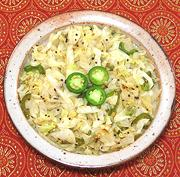

|
Kachumber - CabbageIndia - Kachumber / Kuchumber | ||||
| Serves: Effort: Sched: DoAhead: |
4 side ** 20 min Yes |
This Kachumber is an interesting departure from the usual tomato and cucumber formulas. It is best served quite warm, but is also fine served at room temperature. See also Comments. | |||
|
1-1/2 2 1/2 1 1/2 1/8 15 2/3 1/2 1-1/2 |
# T T T t t t T |
Cabbage Chili, green (1) Coriander seed Oil Mustard Seeds (2) Asafoetida (3) Curry Leaves (4) Salt Sugar Lemon Juice |
Prep - (12 min)
|